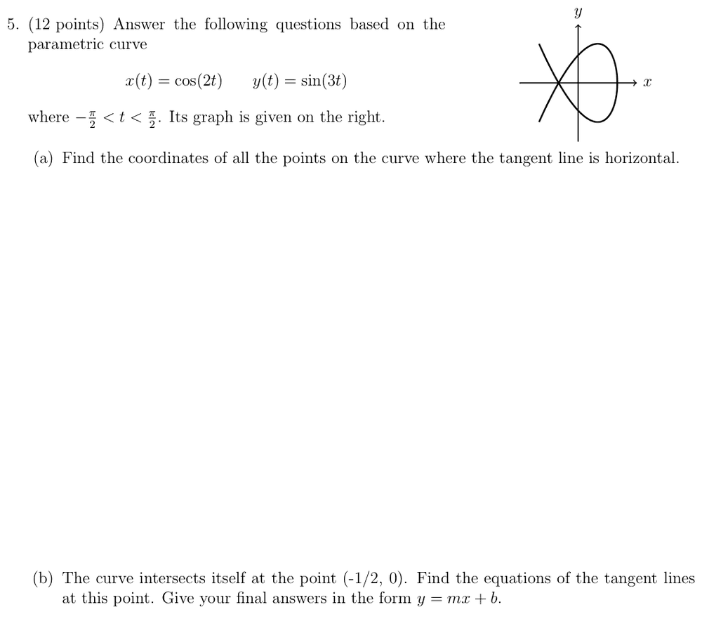
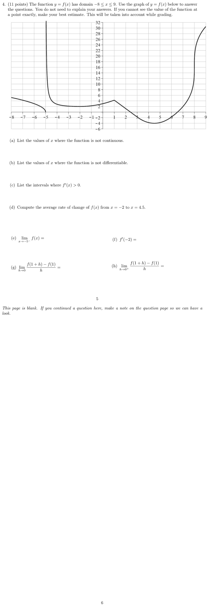
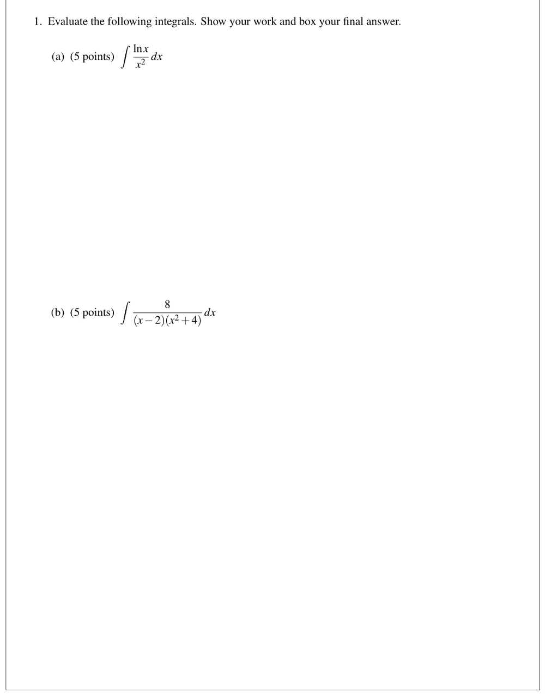
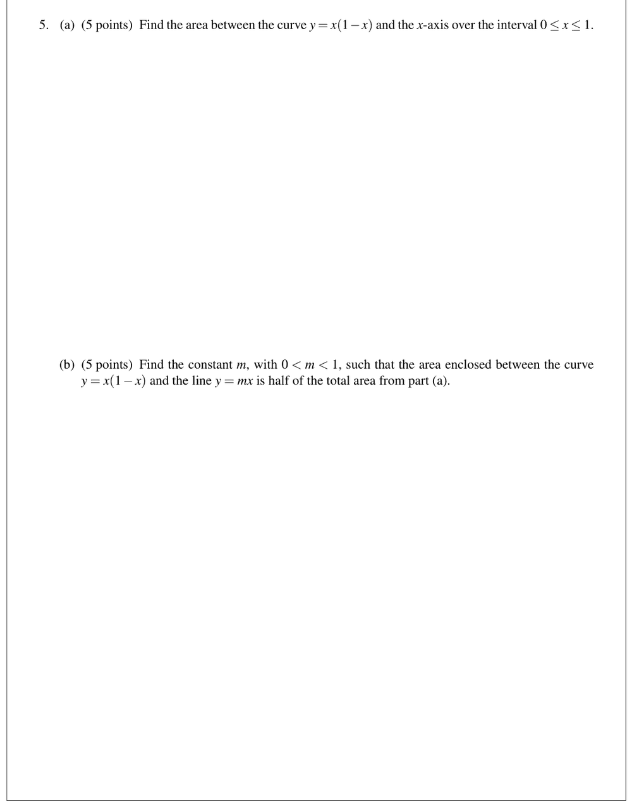

Compare each image with the rendered transcription. Mark Incorrect for any wrong symbol, number or missing part.
Marks save to eval/spotcheck.json when this page is served by node scripts/serve.js.



